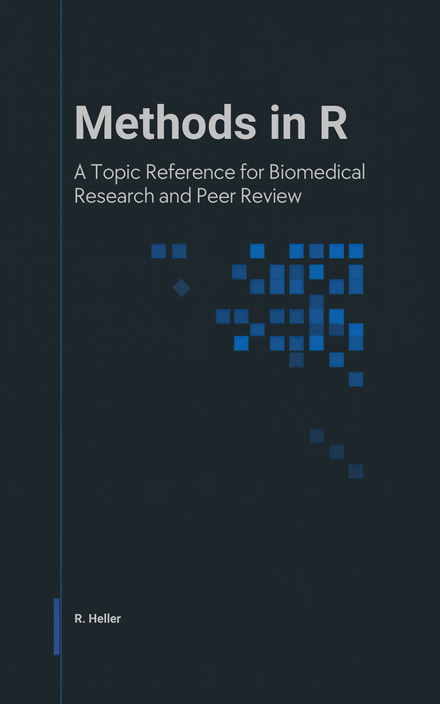

Welcome!

This book is shaped for two readers it expects to serve in the same week: the author who has data in front of them and needs to pick a method, run it in R, and write the Methods paragraph; and the peer reviewer who has a manuscript on their desk and needs to know what a competent application of that method looks like, which diagnostics should have been reported, and what red flags to flag.
The body covers sixteen topic areas — from foundations and inference through regression, survival, Bayesian methods, machine learning, bioinformatics, and study design — with hands-on labs that consolidate the methods of each area into a single runnable file. Every method page ends with a For Reviewers section: the misapplications, the missing diagnostics, the red flags in tables and figures, and the things to verify against the authors’ references and arithmetic. A final part, Reporting Templates, gives copy-paste Methods and Results paragraphs tagged by STROBE / CONSORT / TRIPOD-AI / PRISMA / ARRIVE.
The book is not a textbook of statistics. It assumes you can read an R session and follow a method already named to you. Where it differs from the existing biostatistics shelf is in being optimised for lookup, not linear reading, and in pairing every method with a concrete review checklist.
Open Source Repository
This book has been built using {rmarkdown} and {bookdown}. Formulas are rendered using MathJax. All source files are available on GitHub: https://github.com/r-heller/methods-in-r. You are free to fork, share, and reuse the contents under the CC BY-SA 4.0 license.
How To Use The Guide
- Linear vs. lookup. If you already know the method, jump to its chapter. If not, start at Chapter 1 and follow the decision tree.
-
Where the code lives. Code in each method page and lab is display-only in the rendered book; copy it into an R session with the packages cited in that section attached. Reusable helpers are kept in
R/helpers.Rin the source repository. -
Per-chapter PDFs. Every chapter has a Download this chapter (PDF) button at the top of its page; the full set is also available at
pdf-chapters/. - Whole-book PDF and EPUB. Use the navbar Download menu for a single-file PDF or EPUB.
- Corrections and suggestions. Open an issue at https://github.com/r-heller/methods-in-r/issues.
Citation
The suggested citation is:
Heller, R. (2026). Methods in R: A Topic Reference for Biomedical Research and Peer Review (Version 1.0.0). Self-published via GitHub Pages. https://r-heller.github.io/methods-in-r/.
Download the reference as BibTeX or .ris.